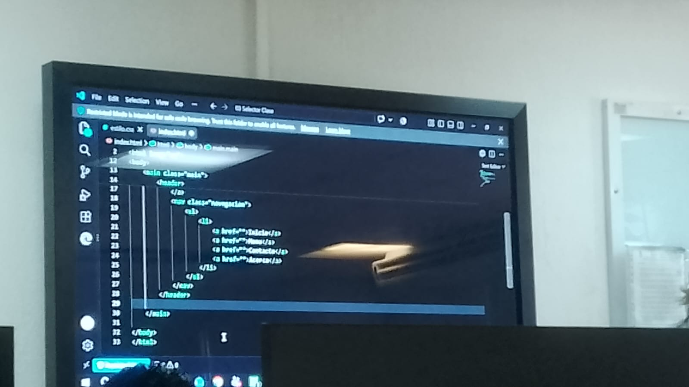

Web personal
Datos Académicos
Mi nombre es Jesús Alberto Cortes García.
Para ser sincero lo único que no me gusta en mi carrera son las matemáticas, el llegar a resolver problemas de gran cantidad de dificultad. Pero sé que es parte de ello y es algo que no puedo cambiar.
